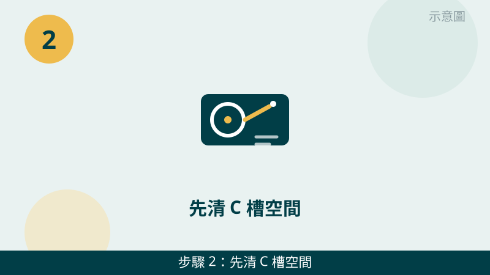
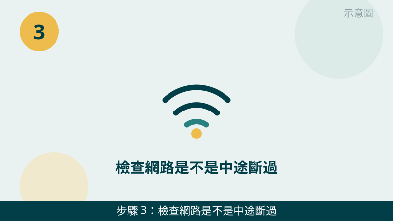
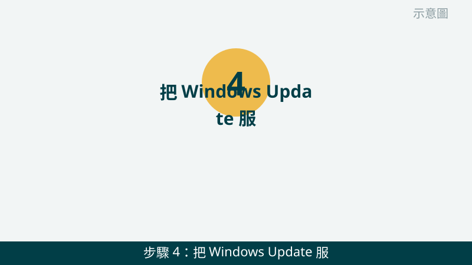
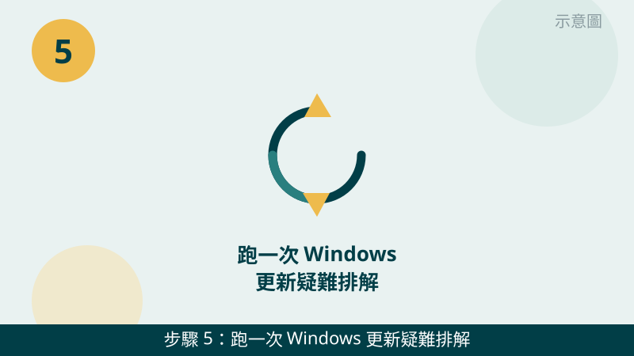
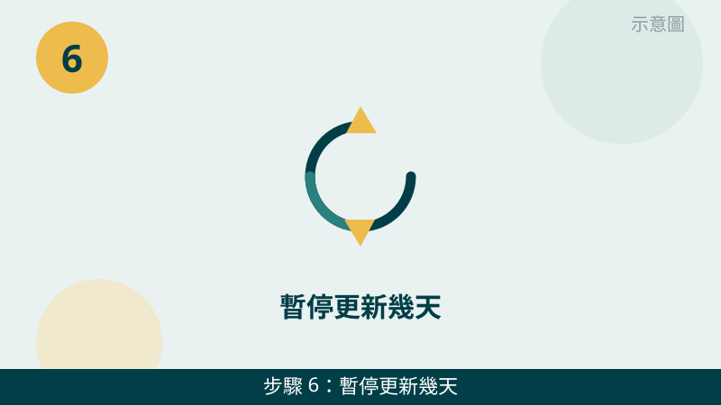

系統更新跑到一半失敗、一直重試又失敗，確實很惱人。但請先放心：更新失敗的原因通常可以分成三種：空間不足、網路中斷、更新檔損壞。先分清是哪一種，再對症處理，比一直按「重試」有效得多。
開始之前先跟您說明一個判斷原則：「每次都卡在同一個地方」和「每次卡的地方都不一樣」是兩種故事。每次都卡在同一個百分比或同一個錯誤代碼，比較像是更新檔或系統設定出了問題；每次卡的地方都不一樣，比較像是空間或網路不穩定。您先把錯誤畫面拍下來，檢查時會更有方向。
更新失敗的畫面先傳給我們看
把錯誤代碼、卡住的百分比、C 槽剩餘空間拍下來傳 LINE，通常能先看出是空間、網路還是更新檔的問題。先免費評估、報價透明，確認後再預約維修。
台中電腦系統更新失敗自救檢查清單（由簡到難）
- 1. 先看更新卡在哪一步：百分比、錯誤代碼、卡了多久。請先到「設定」→「Windows Update」看目前的更新狀態，把百分比和錯誤代碼拍下來。怎麼判斷：有明確錯誤代碼，代表可以照代碼方向查；沒有代碼、只是百分比一直不動，先看下面第 2、3 步是不是空間或網路問題。
示意圖（非官方截圖） - 2. 先清 C 槽空間，空間不足是更新失敗最常見的原因。開啟「本機」看 C 槽剩餘空間，如果剩不到 10% 或只剩幾 GB，更新很容易下載到一半就失敗。請先把下載資料夾的大型檔案、少用的安裝檔移到 D 槽或外接硬碟，再用 Windows 內建「磁碟清理」清掉暫存檔。怎麼判斷：清出空間後再按一次「檢查更新」，看能不能順利往下跑。

示意圖（非官方截圖） - 3. 檢查網路是不是中途斷過。更新檔通常不小，Wi-Fi 不穩、訊號太弱，中途斷線就容易下載到損壞的檔案。請先確認網路是不是正常：能的話改用有線網路，或把筆電移到離路由器近一點的地方，路由器也可以先重開一次再重試。怎麼判斷：換到穩定的網路後重試，如果下載進度能順利往前跑，多半就是網路問題。

示意圖（非官方截圖） - 4. 把 Windows Update 服務重開一次。更新服務卡住時，單純按重試不一定有用。請在搜尋列輸入「服務」，開啟後找到「Windows Update」，先按「停止」再按「啟動」，讓服務重新跑一次，再回到「Windows Update」按「檢查更新」。怎麼判斷：服務重開後，更新能重新開始下載，代表之前只是服務卡住了。

示意圖（非官方截圖） - 5. 跑一次 Windows 更新疑難排解員。請到「設定」→「系統」→「疑難排解」→「其他疑難排解員」，找到「Windows Update」按「執行」，讓系統自己檢查更新元件有沒有出錯、並嘗試修復。怎麼判斷：疑難排解員跑完後會告訴您找到什麼問題、修好了沒有；修好後再重試一次更新，看還會不會失敗。

示意圖（非官方截圖） - 6. 暫停更新幾天，再重新開始。如果上面幾步都試過還是失敗，請到「Windows Update」按「暫停更新」，先暫停一週，讓電腦正常使用幾天後再按「繼續更新」重試一次。怎麼判斷：暫停後再重試就成功，代表之前可能是更新檔本身或暫時性的伺服器問題；暫停後重試還是同一個錯誤，就不要再反覆試了，請先拍照問我們。

示意圖（非官方截圖）
別再自己試了
- 更新卡很久時，不要強制斷電關機，以免更新檔損壞、甚至開不了機
- 不要亂刪系統資料夾，例如 Windows 資料夾、System32 或不認識的系統檔案，刪錯會讓系統更不穩定
- 更新後一直藍屏、一直自動重開機、或開不了機，請先停手，先拍照問我們，不要反覆重開機測試
- 網路上教的「一鍵修復更新」「登錄檔清理」工具來路不明，不要隨便下載安裝，以免越修越糟
- 重要檔案還沒備份時，不要直接重灌系統，請先拍照問我們怎麼保資料
如果您的電腦除了更新失敗，還伴隨變慢、開機很久，也建議順手看一下變慢篇：空間不足和系統暫存常常是同一件事的兩種表現。我們的檢測會把磁碟空間、更新狀態、系統健康一起交叉比對，找出真正的原因再報價給您。
常見問題
台中電腦系統更新失敗，是不是電腦壞了？
不一定。更新失敗最常見的原因是 C 槽空間不足、網路中途斷線、或是下載到的更新檔損壞，這三種都不代表硬體壞掉。照本文 6 步先分清原因再重試，很多狀況整理完就能順利更新；如果一直出現同一個錯誤代碼，再把畫面拍照傳給我們判斷。
更新卡在某個百分比很久，可以直接關機嗎？
請先不要強制斷電關機。更新卡很久時，系統可能還在背景寫入檔案，強制斷電反而容易讓更新檔損壞、甚至開不了機。建議您先耐心等一段時間，同時把卡住的百分比與錯誤訊息拍照傳 LINE 給我們，我們會先幫您判斷該繼續等還是停下來檢查。
更新失敗的畫面拍照傳 LINE 就可以先判斷嗎？
可以先給方向。把更新畫面的百分比、錯誤代碼、C 槽剩餘空間拍下來傳給我們，通常能先看出是空間、網路還是更新檔的問題；要完全確認，還是需要實機檢測，這部分評估不收費，請放心傳。